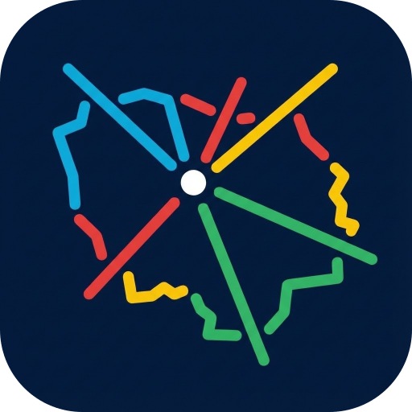
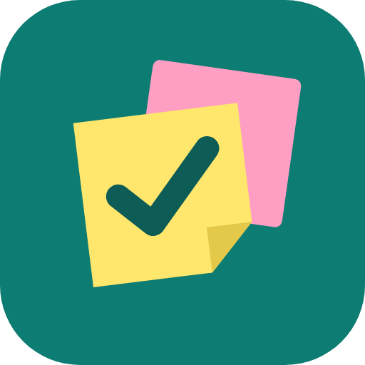
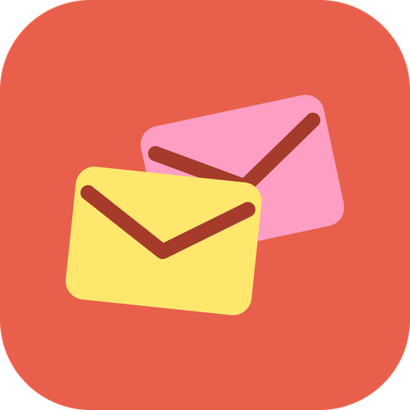
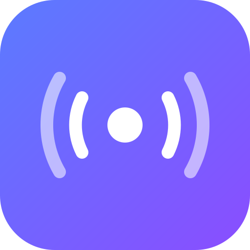
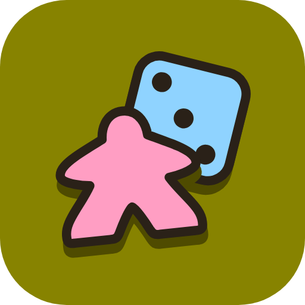
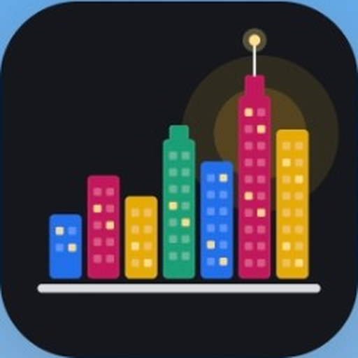

Charte Paname Dev
Un socle léger partagé par toutes les apps, et chaque app garde son âme. Cette page résume CHARTE.md pour qu'on en discute : tout ce qui est marqué proposition est à valider ou à jeter.
1. Identité
| Sujet | Valeur |
|---|---|
| Marque / éditeur | Paname Dev |
| Domaine | panamedev.fr : le site est en ligne (hébergement OVH, déploiement automatique) ; sous-domaines par app plus tard |
| Contact | contact@panamedev.fr partout |
| Copyright | © 2026 Paname Dev, puis © 2026–année en cours |
| Mention | Conçu et codé avec Claude · version courte : Fait avec Claude |
| Promesse | Sans pub, sans pistage : vrai pour toutes les apps, on le dit partout. « Données chez toi » seulement quand c'est exact (Desk Mail, Near Pass) |
| Langue et ton | Français, tutoiement, phrases courtes, on dit ce que l'app fait avant comment |
L'histoire : des apps que j'avais toujours voulu avoir, qui n'existaient pas, alors je les ai créées, avec Claude.
2. Les icônes aujourd'hui
Tool Proj et Desk Mail suivent la même recette. Les autres ont leur propre style.






Lisibilité en petit (96 · 48 · 32 px)
3. Palette
Pastels partagés (les objets des icônes)
Couleurs d'app (fond + encre foncée)
La palette part de Tool Proj et Desk Mail, qui ne bougent pas. Les autres couleurs sont placées sur la roue pour que l'écart entre deux voisines soit le même (70 à 77°), donc aucune app n'est proche d'une autre, avec la luminosité et l'intensité moyennes de ces deux-là (L 0,59, C 0,13). L'encre est la même teinte, plus sombre. python3 scripts/palette.py recalcule tout.
Couleurs de réserve (entre les couleurs d'app)
Le milieu exact entre deux couleurs voisines, même luminosité et même intensité. Elles servent à remplacer une couleur principale, jamais à venir en plus (règle ci-dessous). Le Cyan (219°) est tout près du bleu de Grand Paname (228°) : à éviter.
Règle d'éloignement
- 60° de teinte minimum entre deux apps. La luminosité ne compte pas : deux couleurs de même teinte se confondent, claires ou foncées.
- Les 5 couleurs principales sont à 68° ou plus les unes des autres : compatibles entre elles.
- La réserve remplace, elle n'ajoute pas : ses couleurs sont à 35° de leurs voisines.
- La roue ne tient que 5 apps (6 au maximum). Une nouvelle app prend la place d'une teinte ou fait revoir la palette.
- Contrôle actuel :
python3 scripts/palette.pysignale Grand Paname (bleu du logo, 228°) à 43° de Tool Proj et 25° d'UrbaSim : conflit à régler.
Sur la roue, le cercle vide bleu est Grand Paname (bleu de son logo, 228°) : il a sa propre palette, mais il se glisse entre le vert canard et le bleu d'UrbaSim ; à surveiller. Le Ocre sort un peu olive : à cette luminosité, le jaune ne peut pas être autre chose.
Grand Paname : sa propre palette (les couleurs de son logo)
Mesurées sur le logo : un fond bleu nuit et les couleurs des lignes. Les couleurs des lignes de métro dans l'app viennent des données officielles, jamais du thème. L'interface a aussi ses trois thèmes (clair, sombre, OLED), décrits dans son guide graphique. Sur le site vitrine, l'accent de Grand Paname est le bleu de son logo, #0ca8d8 (texte bleu nuit sur les boutons pleins, pour la lisibilité).
4. Mesures des icônes
Des repères pour garder l'air de famille, pas des obligations.
| Quoi | Repère |
|---|---|
| Coins du carré de fond | 22 % du côté |
| Marge intérieure (pointillés) | 12 % de chaque côté |
| Épaisseur du trait | ≈ 4,5 % de l'icône, bouts et angles arrondis |
| Coins des objets | ≈ 14 % de leur hauteur |
| Inclinaison | +12° derrière, −6° devant (Desk Mail) ; ≈ 6° et −4° (Tool Proj) |
| Tailles de test | 96 · 48 · 32 px |
L'esprit (sans règle)
Un fond uni en carré arrondi · des objets plats et pastel qui racontent l'app · un trait foncé épais · tout arrondi, sans dégradé ni ombre · des objets qui se chevauchent un peu · lisible en tout petit. L'objet est toujours celui de l'app : on ne met pas des post-it sur Near Pass.
5. Formes de l'interface (le site)
coins 14 à 22 px, bordure fine
Boutons et puces en pilule (999 px) · une seule couleur d'accent par app, pour les actions et l'état actif · le rouge est réservé aux problèmes · tout se vérifie en clair et en sombre · animations 250 à 400 ms, cubic-bezier(.2,.8,.2,1), qui respectent « réduire les animations ».
6. Décidé
- PaletteOn garde tous les pastels et toutes les couleurs. Grand Paname a sa catégorie à part.
- Nom« Score Board » en deux mots.
- Sans pub, sans pistageVrai pour toutes les apps, on le dit partout. Mais pas « données chez toi » : faux pour Tool Proj (Supabase) et Score Board en ligne (Firebase).
- Aucune requête tierce inutilePolices et bibliothèques hébergées avec l'app (pas de Google Fonts ni de CDN). Les services nécessaires (cartes, API, base de données) sont nommés dans la page de confidentialité.
- HarmonisationPage de confidentialité pour toute app ; un seul nom partout (« Score Board », plus « PanaGames ») ; mention de conception exacte ; identifiant
fr.panamedev.<app>pour les apps non publiées. - Icône du siteOn la garde, avec les six icônes disposées en cercle au lieu de deux lignes.
7. À discuter
- Le titulaire du copyrightPaname Dev comme marque ? ou ton nom ?
- La couleur de Near PassViolet provisoire. Violet profond, orange, bleu ciel, framboise… ? Et son icône (radar actuel, ou autre idée).
- Grand Paname, Score Board, UrbaSimGarder leurs icônes telles quelles, ou les rapprocher doucement de la famille (palette, formes) ?
© 2026 Paname Dev · Conçu et codé avec Claude · contact@panamedev.fr